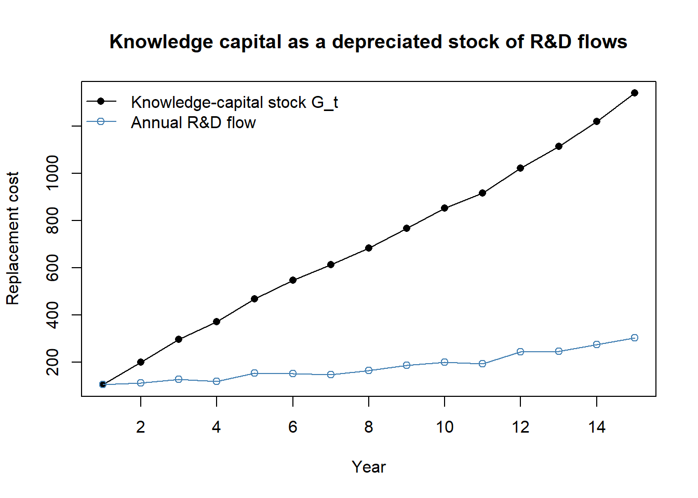

flowchart LR
A["Marketing actions<br/>(advertising, innovation,<br/>relationship investment)"]
--> B["Market-based assets<br/>Relational: brands, customers,<br/>channels, partners<br/>Intellectual: market knowledge"]
B --> C["Product-market outcomes<br/>faster penetration · price premium<br/>share premium · extensions<br/>lower selling/service cost<br/>loyalty / retention"]
C --> D1["Accelerate cash flows"]
C --> D2["Augment level of cash flows"]
C --> D3["Reduce volatility &<br/>vulnerability of cash flows"]
C --> D4["Enhance residual value"]
D1 --> E["Shareholder value"]
D2 --> E
D3 --> E
D4 --> E
18 Marketing–Finance Interface
Marketing spends real money—on advertising, salesforces, distribution, brands, and customer relationships—and the people who allocate capital eventually ask what those expenditures are worth. The marketing–finance interface is the body of theory and empirical method that answers this question by linking marketing actions to firm value: to cash flows, to risk, and ultimately to the price an equity market sets on the firm. Its central claim is deceptively simple. The things marketing builds—brand equity, a satisfied and loyal customer base, channel and partner relationships—are assets, and like any asset they should be visible in the value of the firm even though accounting rules largely keep them off the balance sheet (Srivastava, Shervani, and Fahey 1998; Srinivasan and Hanssens 2009).
Two intellectual currents meet here. From finance comes the discipline of discounted cash flow and the apparatus of asset pricing: a firm is worth the present value of its future cash flows, and a stock’s return reflects the revision of investors’ expectations about those flows. From marketing comes a theory of where those cash flows originate—in customers and the relationships, knowledge, and reputation that produce repeat purchase, price premiums, and lower acquisition costs. The interface insists that the two be made consistent: actions that create value in the product market should, under an efficient capital market, create value for shareholders (Srinivasan and Hanssens 2009). When they do not, either the marketing action destroyed value or the market has not yet priced it—both empirically interesting outcomes.
By the end of this chapter the reader should be able to state the market-based assets framework formally, write down and estimate the workhorse models that connect marketing to firm value (stock-return response models, persistence/VAR models, and Tobin’s \(q\) regressions), reason carefully about what identifies a causal effect in each, and recognize the measurement traps—most acutely in accounting-based proxies for \(q\)—that have tripped up the literature. We treat the event-study machinery for discrete marketing events (acquisitions, alliances, product introductions) as a running application, since mergers and acquisitions and strategic alliances are where the interface has produced its deepest body of evidence. The branding chapter (Chapter 6) develops the event study and stochastic-frontier capability estimators in the specific context of brand assets; here we build the general scaffolding.
18.1 Market Efficiency and the Logic of Valuation
Everything downstream rests on an assumption about how stock prices incorporate information, so it is worth stating precisely. The efficient market hypothesis classifies markets by the information set already impounded in prices. Under weak-form efficiency prices reflect the history of prices themselves; under semi-strong efficiency they reflect all public information in real time; under strong-form efficiency they reflect public and private information. The working consensus in the marketing–finance literature is that real markets sit between weak and semi-strong form: public information about marketing—an earnings release that reveals advertising’s payoff, a product-recall announcement, an alliance—moves prices, and it does so promptly though not always completely (Srinivasan and Hanssens 2009).
This has a sharp empirical implication. If markets are at least near-semi-strong efficient, then good news about marketing raises the stock price and bad news lowers it, and—because the price is forward-looking—the change in price at the moment news arrives is an unbiased, risk-adjusted estimate of the news’s value to shareholders. Stock-market valuation is then in sync with product-market valuation: the same actions that build value with customers build value for investors. This equivalence is what licenses the use of stock returns to value marketing, and it is the premise the event study exploits.
Formally, let \(V_{it}\) be the market value of firm \(i\)’s equity at the end of period \(t\). The dividend-discount identity writes it as the expected present value of future cash flows to equity,
\[ V_{it} = \sum_{T=t}^{\infty} \left(\frac{1}{1+r_{it}}\right)^{T-t}\, \mathbb{E}_t\!\left[\mathrm{CF}_{iT}\right], \tag{18.1}\]
where \(r_{it}\) is the firm’s cost of equity capital and \(\mathbb{E}_t[\cdot]\) is the expectation conditional on information available at \(t\). Marketing enters through the cash-flow expectations. Srivastava, Shervani, and Fahey (1998) organize marketing’s value contribution into four channels visible in Equation 18.1: marketing can accelerate cash flows (bring them forward in time), augment their level, reduce their risk (volatility and vulnerability, which lowers \(r_{it}\)), and raise their residual value (the terminal value beyond the explicit forecast horizon). The rest of the framework is an elaboration of how marketing assets operate through these four levers.
18.2 Market-Based Assets
18.2.1 Definition and the Resource-Based Test
The conceptual core of the interface is the market-based asset. The following landmark definition frames everything that follows.
Market-based assets “arise from the commingling of the firm with entities in its external environment,” where an asset is “any physical, organizational, or human attribute that enables the firm to generate and implement strategies that improve its efficiency and effectiveness in the marketplace” (Srivastava, Shervani, and Fahey 1998, 2–3).
The defining feature is externality of locus: unlike a factory or a patent, a market-based asset lives in a relationship or in knowledge that spans the firm’s boundary. Srivastava, Shervani, and Fahey (1998) distinguish two kinds. Relational market-based assets are outcomes of the firm’s relationships with external stakeholders— distributors, retailers, end customers, strategic partners. Brand equity is the relational asset between a firm and its customers; channel equity is the relational asset between a firm and its intermediaries. Intellectual market-based assets are the firm’s knowledge about its environment: the emerging and potential states of market conditions and of the entities (competitors, customers, channels, suppliers, regulators) within them.
For a resource to create sustained value it must pass the resource-based view’s four tests: it must be convertible (the firm can actually exploit it), rare, imperfectly imitable, and have no perfect substitutes (Srivastava, Shervani, and Fahey 1998). Knowledge and relationships pass all four, which is precisely why they can support a durable competitive advantage where tangible assets—easily bought, copied, or substituted—cannot. Each asset has a stock dimension (the amount of brand equity or customer knowledge the firm possesses at a point in time) and a flow dimension (the rate at which that stock is being augmented or is decaying) (Srivastava, Shervani, and Fahey 1998, 5). The stock–flow distinction matters for estimation: marketing expenditures are flows that accumulate, with decay, into the stock that produces cash flow—a structure we exploit in the persistence and perpetual- inventory models below.
18.2.3 Why Not Just Use Accounting Numbers?
A natural objection is that firms already report performance, so why build a parallel valuation apparatus. The answer is that the obvious accounting measures are poor proxies for value creation. Book value records assets at historical cost and ignores intangibles entirely; replacement value is conceptually better but practically unmeasurable for relationships and knowledge; and price–earnings multiples inherit the well-known pathologies of accrual accounting—earnings are backward-looking, unadjusted for risk, and manipulable through accruals timing. The shareholder-value approach—discounted future cash flow, as in Equation 18.1—dominates these because it is forward-looking, risk-adjusted, and harder to game (Srivastava, Shervani, and Fahey 1998). This is also the principal reason cash flow, rather than earnings, is the preferred firm-performance variable in interface research, and it motivates the use of \(q\)-type and stock-return measures in place of profitability ratios.
18.3 Methods for Connecting Marketing to Firm Value
Three broad estimation strategies dominate, distinguished by the nature of the marketing event and the time structure of the data. Table 18.1 contrasts them; the subsections that follow develop the two most important.
| Approach | What it measures | Core model | Identifying assumption | Breaks when |
|---|---|---|---|---|
| Event study / stock-return response | Value of a discrete, dated event | Market-model abnormal returns \(\mathrm{AR}_{it}\), cumulated to \(\mathrm{CAR}_i\) | Market is semi-strong efficient; event date is exogenous and unconfounded within the window | Information leaks before the date; confounding events share the window; the event is anticipated |
| Persistence modeling (VAR) | Long-run cumulative impact of a marketing shock, separating temporary from permanent effects | Vector autoregression with impulse-response and unit-root analysis | Shocks are correctly identified (ordering/IRF); the system is stable or has a well-defined permanent component | Wrong variable ordering; structural breaks; omitted feedback channels |
| Tobin’s \(q\) / valuation regression | Cross-sectional association of marketing assets with firm value | \(q_{it} = \mathbf{x}_{it}^{\top}\boldsymbol{\beta}+\alpha_i+\delta_t+u_{it}\) | Marketing regressor is exogenous conditional on controls and fixed effects | Reverse causality; omitted intangibles; accounting proxy bias (see Section 18.4.2) |
A fourth, the single-equation error-correction model (ECM), is used when the data are nonstationary and one wants to separate a long-run equilibrium relation from short-run dynamics; it recognizes the random-walk character of stock prices and is a staple of the persistence tradition (Srinivasan et al. 2009).
18.3.1 Stock-Return Response Modeling
The cleanest way to value a discrete marketing event is to read the value directly off the stock price, exploiting market efficiency. Begin again from the market-value identity and difference it across one period. With \(\mathrm{Eret}_{it}\) the expected (required) return on the equity and \(r_{it}\) the discount rate,
\[ V_{it} = (1+\mathrm{Eret}_{it})\,V_{it-1} + \sum_{T=t}^{\infty} \left(\frac{1}{1+r_{it}}\right)^{T-t} \Delta\,\mathbb{E}_t\!\left[\mathrm{CF}_{iT}\right], \tag{18.2}\]
where \(\Delta\,\mathbb{E}_t[\mathrm{CF}_{iT}] \equiv \mathbb{E}_t[\mathrm{CF}_{iT}] - \mathbb{E}_{t-1}[\mathrm{CF}_{iT}]\) is the revision in the expected cash flow for date \(T\) that arrives during period \(t\). The first term is the value the firm would have had absent any news—it grows at the required return—and the second term is the capitalized value of the news itself. Rearranging gives the realized stock return as an expected component plus an abnormal component driven entirely by cash-flow-expectation revisions:
\[ \mathrm{StockReturn}_{it} = \frac{V_{it}-V_{it-1}}{V_{it-1}} = \mathrm{Eret}_{it} + \underbrace{\frac{1}{V_{it-1}} \sum_{T=t}^{\infty}\left(\frac{1}{1+r_{it}}\right)^{T-t} \Delta\,\mathbb{E}_t\!\left[\mathrm{CF}_{iT}\right]}_{\text{abnormal return }\;\mathrm{AR}_{it}}. \tag{18.3}\]
Equation 18.3 is the theoretical justification for the event study. The abnormal return \(\mathrm{AR}_{it}\) is the realized return net of its expectation, and under market efficiency it equals the present value of the cash-flow news, scaled by beginning-of-period value. To take it to data one needs a model for the expected return \(\mathrm{Eret}_{it}\). The standard choice is the market model, a single-factor regression of the firm’s return on the market return estimated over a clean pre-event window \([t_0, t_1]\):
\[ R_{it} = \alpha_i + \beta_i R_{mt} + \varepsilon_{it}, \qquad \widehat{\mathrm{AR}}_{it} = R_{it} - \hat\alpha_i - \hat\beta_i R_{mt}. \tag{18.4}\]
Cumulating over the event window \(W\) gives the cumulative abnormal return \(\mathrm{CAR}_i = \sum_{t \in W}\widehat{\mathrm{AR}}_{it}\), which is then regressed cross-sectionally on event characteristics to learn what drives value. The branding chapter (Chapter 6) gives the full estimator and the standard confound screens; the key identifying requirements are that the event date be exogenous and that no other value-relevant news (earnings, splits, executive turnover, buybacks, dividend changes) contaminate the window. The following code simulates the procedure end to end so the reader can see exactly where each quantity comes from.
Code
set.seed(21)
# --- simulate a market and one firm with a known event-day jump --------------
n_est <- 250 # estimation-window trading days
n_evt <- 5 # event-window days (e.g., -2..+2)
alpha <- 0.0002; beta <- 1.10
mkt_est <- rnorm(n_est, 0.0004, 0.009)
firm_est <- alpha + beta * mkt_est + rnorm(n_est, 0, 0.012)
# --- estimate the market model on the clean pre-event window -----------------
fit <- lm(firm_est ~ mkt_est)
# --- event window: true cash-flow news adds +3% on the announcement day ------
mkt_evt <- rnorm(n_evt, 0.0004, 0.009)
news <- c(0, 0, 0.03, 0, 0) # day 0 carries the marketing news
firm_evt <- coef(fit)[1] + coef(fit)[2] * mkt_evt +
rnorm(n_evt, 0, 0.012) + news
# --- abnormal and cumulative abnormal returns --------------------------------
expected_evt <- predict(fit, newdata = data.frame(mkt_est = mkt_evt))
AR <- firm_evt - expected_evt
CAR <- cumsum(AR)
data.frame(day = -2:2, AR = round(AR, 4), CAR = round(CAR, 4))
#> day AR CAR
#> 1 -2 -0.0105 -0.0105
#> 2 -1 0.0106 0.0001
#> 3 0 0.0407 0.0408
#> 4 1 -0.0043 0.0365
#> 5 2 -0.0028 0.0337The recovered cumulative abnormal return concentrates on day 0 and is close to the 3% shock injected, illustrating why—when the efficiency and no-confound assumptions hold—the event study delivers a clean, risk-adjusted dollar value for a marketing event.
18.3.2 Persistence Modeling
Many marketing effects are not one-day jumps but dynamic responses that build and decay over months: an advertising pulse raises awareness, which raises sales, which feeds back into the budget. Persistence modeling uses a vector autoregression (VAR) to trace the full dynamic response of firm value (or sales, or cash flow) to a marketing shock and, crucially, to separate the temporary component (which dies out) from the permanent component (which is impounded forever) (Srinivasan and Hanssens 2009). For a vector \(\mathbf{y}_t\) stacking, say, log firm value, a marketing variable, and a control,
\[ \mathbf{y}_t = \mathbf{c} + \sum_{\ell=1}^{p} \mathbf{\Phi}_\ell\,\mathbf{y}_{t-\ell} + \boldsymbol{\epsilon}_t, \qquad \boldsymbol{\epsilon}_t \sim (\mathbf{0}, \mathbf{\Sigma}), \tag{18.5}\]
the impulse-response function \(\partial \mathbf{y}_{t+h}/\partial \boldsymbol{\epsilon}_t\) gives the effect of a unit shock \(h\) periods out, and its long-run sum measures total persistent impact. Identification of structural shocks requires an ordering (or sign/long-run restrictions); the standard recursive ordering assumes a Cholesky causal chain that the researcher must defend. When the series are nonstationary—stock prices follow a near random walk—the analyst works with the unit-root/cointegration structure directly, typically via an error-correction representation that separates the long-run equilibrium from short-run adjustment (Srinivasan et al. 2009). The two pitfalls to flag are that the permanent/temporary decomposition is only as good as the unit-root inference behind it, and that an omitted feedback channel (e.g., competitor response) biases the impulse responses.
18.4 Tobin’s \(q\) and Valuation Regressions
The most common cross-sectional measure of firm value in interface research is Tobin’s \(q\), the ratio of a firm’s market value to the replacement cost of its assets. Intuitively, \(q>1\) means the market values the firm above what it would cost to rebuild its assets, and the gap is attributed to intangibles and growth options—exactly the territory marketing claims. Its appeal is that it is forward-looking, risk-adjusted, and less manipulable than accounting profitability, which is why it is the dependent variable of choice in studies of how marketing assets relate to firm value (Grewal, Chandrashekaran, and Citrin 2010; McAlister et al. 2016; Morgan and Rego 2009; Wies et al. 2019). When probing the drivers of \(q\), the literature recommends controlling at minimum for financial leverage and cash flow, since both shift \(q\) for reasons unrelated to marketing (Wies et al. 2019).
The traditional empirical proxy assembles \(q\) from financial statements (Rao, Agarwal, and Dahlhoff 2004):
\[ q = \frac{\mathrm{MVE} + \mathrm{PS} + \mathrm{DEBT}}{\mathrm{TA}}, \tag{18.6}\]
where \(\mathrm{MVE}\) is the market value of equity (share price times shares outstanding), \(\mathrm{PS}\) the liquidating value of preferred stock, \(\mathrm{DEBT}\) is short-term liabilities net of short-term assets plus the book value of long-term debt, and \(\mathrm{TA}\) the book value of total assets. Because both numerator and denominator scale with firm size, \(q\) is scale-independent and thus comparable as a measure of relative market performance across firms of different sizes.
A typical valuation regression then takes the form
\[ q_{it} = \mathbf{x}_{it}^{\top}\boldsymbol{\beta} + \alpha_i + \delta_t + u_{it}, \tag{18.7}\]
with \(\mathbf{x}_{it}\) the marketing variables of interest plus leverage and cash flow, \(\alpha_i\) firm fixed effects absorbing time-invalid heterogeneity, and \(\delta_t\) time effects absorbing common shocks. Identification of a causal marketing effect requires that, conditional on the controls and fixed effects, the marketing regressor be uncorrelated with \(u_{it}\). This is demanding: reverse causality (valuable firms spend more on marketing), omitted intangibles (R&D or organizational capital correlated with both), and measurement error in the intangible-laden denominator all threaten it. The next two subsections address the denominator problem, which is the deepest and least appreciated.
18.4.1 Total \(q\): Putting Intangibles in the Denominator
Equation Equation 18.6 divides market value by physical assets at book value, ignoring the intangible capital—knowledge and organizational/brand capital—that the firm has built. Peters and Taylor (2017) argue that the neoclassical theory of investment applies to intangibles just as it does to plant and equipment, and propose a total \(q\) that puts intangible capital into the denominator at replacement cost:
\[ \begin{aligned} q^{\text{tot}}_{it} &= \frac{V_{it}}{K^{\text{phy}}_{it} + K^{\text{int}}_{it}} \\[2pt] &= \frac{\text{prcc\_f}\times\text{csho} + \text{dltt} + \text{dlc} - \text{act}} {\text{ppegt} + K^{\text{int}}_{it}}, \end{aligned} \tag{18.8}\]
where the market value \(V_{it}\) is equity (price prcc_f times shares csho) plus the book value of debt (dltt + dlc) minus current assets (act), \(K^{\text{phy}}_{it}\) is the replacement cost of physical capital (gross property, plant, and equipment, ppegt), and \(K^{\text{int}}_{it}\) is the replacement cost of intangible capital. Earlier \(q\) proxies omitted the intangible term entirely (Fazzari, Hubbard, and Petersen 1987; Erickson and Whited 2011), biasing \(q\) upward for intangible-intensive firms.
Intangible capital is itself accumulated by the perpetual-inventory method. For internally created knowledge capital, the end-of-period stock evolves as
\[ G_{it} = (1-\delta_{\mathrm{RD}})\,G_{i,t-1} + \mathrm{RD}_{it}, \tag{18.9}\]
with \(G_{i0}=0\), real R&D expenditure \(\mathrm{RD}_{it}\) (treated as zero when missing (Lev and Radhakrishnan 2005)), and an industry-specific depreciation rate \(\delta_{\mathrm{RD}}\) (the BEA R&D rates, defaulting to 15% when unavailable (Li and Hall 2018)). Organizational and brand capital are built analogously from a fraction of past selling, general, and administrative (SG&A) spending—which bundles advertising (brand), employee training (human capital), and distribution systems. Intangible capital is costlier to adjust than physical capital, a friction the neoclassical model takes seriously. Figure 18.2 simulates the knowledge-capital recursion to make the stock–flow logic concrete.
Code
# Knowledge-capital accumulation by perpetual inventory (eq. mf-knowcap).
set.seed(21)
years <- 1:15
rd_flow <- 100 * (1.08)^(years - 1) * exp(rnorm(length(years), 0, 0.05))
delta_rd <- 0.15 # BEA-style default depreciation
G <- numeric(length(years)); G[1] <- rd_flow[1]
for (t in 2:length(years)) {
G[t] <- (1 - delta_rd) * G[t - 1] + rd_flow[t]
}
plot(years, G, type = "o", pch = 16,
xlab = "Year", ylab = "Replacement cost",
main = "Knowledge capital as a depreciated stock of R&D flows",
ylim = range(c(G, rd_flow)))
lines(years, rd_flow, type = "o", col = "steelblue", pch = 1)
legend("topleft", bty = "n",
legend = c("Knowledge-capital stock G_t", "Annual R&D flow"),
col = c("black", "steelblue"), pch = c(16, 1), lty = 1)
The stock \(G_t\) rises well above any single year’s flow because past investments persist (depreciating at \(\delta_{\mathrm{RD}}\)); this is exactly the wedge that Equation 18.8 restores to the denominator and that a naive physical-capital \(q\) ignores.
18.4.2 Why Accounting Proxies for \(q\) Mislead
A blunt warning is in order, because the convenience of Equation 18.6 has seduced a generation of marketing papers. Bendle and Butt (2018) label these financial-statement constructions accounting-based approximations of Tobin’s \(q\) (AATQ) and argue they depart from \(q\)’s original meaning in ways that systematically favor the marketing variables researchers most want to study. Their critique has several edges. AATQ are not comparable across industries because the off-balance-sheet wedge varies by sector; they do not in fact isolate tangible assets in the denominator; and there is no theoretical reason for AATQ to equilibrate at one, contrary to a common assumption inherited from the original \(q\). Worse, when AATQ exceeds one—the empirically typical case—it can rise even in response to wasted investment, so an AATQ increase is consistent with both genuine value creation and value-neutral or value-destroying strategies. The net effect is a bias toward overstating the effectiveness of investments in market-based assets, precisely because those assets are the unrecorded items (brand equity, customer satisfaction) that the AATQ denominator omits. The methodological lesson is to prefer a \(q\) that books intangibles into the denominator (Equation 18.8), to lean on within-firm variation through fixed effects, and to treat any AATQ-based effect as suggestive until corroborated.
18.5 Discrete Events: M&A, Alliances, and Innovation
The interface’s richest evidence comes from discrete, dated events whose value the event study can isolate. Mergers and acquisitions (M&A) are the canonical case, and the marketing question is sharp: what kind of combination creates value? Two hypotheses compete. The similarity (relatedness) hypothesis holds that value comes from combining firms with overlapping products, markets, or technologies, through scale and consolidation; the complementarity hypothesis holds that value comes from combining firms whose resources differ and fill each other’s gaps. Table 18.2 organizes the core findings; note that the studies disagree because the motive for the merger determines which logic applies.
| Study | DV | Key IV | Finding |
|---|---|---|---|
| Singh and Montgomery (1987) | Cumulative portfolio abnormal returns | Acquirer–target relatedness (technological / product-market) | Related firms create more value |
| Shelton (1988) | Merger dollar gains | Product-market fit | Related firms create more value |
| Harrison et al. (1991) | ROA | Differences in R&D, capital, administrative intensity | R&D complementarity boosts unrelated acquisitions |
| Datta, Pinches, and Narayanan (1992) | Wealth effects | Bids, financing, acquisition type; served-market overlap | Similar firms create more value |
| Ramaswamy (1997) | ROA | Distance in coverage, efficiency, marketing, client mix, risk | Differences impede horizontal bank mergers |
| Hitt et al. (1998) | ROA | Product-market relatedness and resource complementarity | Resource complementarities aid success |
| Larsson and Finkelstein (1999) | Synergy realization | Combination potential, integration, low employee resistance | Complementary operations + integration raise synergy |
| Swaminathan, Murshed, and Hulland (2008) | CAR (event study) | Strategic-emphasis alignment; resource similarity/complementarity | Both similarity and complementarity create value, under different motives |
The financing and timing of deals carries information of its own. Cash deals are received more favorably than stock-financed deals, because paying with equity signals that managers believe their stock is overvalued; this adverse reaction to equity financing is permanent, with negative acquirer returns persisting five years post-takeover (Agrawal, Jaffe, and Mandelker 1992; Loughran and Vijh 1997). Excess cash is no panacea—announcement returns fall with an acquirer’s cash holdings, consistent with managers shielded from external capital-market discipline making poorer investment choices (Harford 1999). There is broad evidence of post-merger underperformance on average (Agrawal and Jaffe 2000), yet the cross-section is informative: small acquirers earn favorable long-run returns (Mitchell and Stafford 2000; Moeller, Schlingemann, and Stulz 2004); undervalued, high book-to-market “value” acquirers outperform overvalued “glamour” acquirers, whose overconfident managers face weaker scrutiny (Sudarsanam and Mahate 2003); bull-market acquisitions underperform bear-market ones as hubris inflates synergy estimates in upswings (Bouwman, Fuller, and Nain 2009); deals for privately held or subsidiary targets generate buyer gains through illiquidity discounts and concentrated post-deal monitoring (Fuller, Netter, and Stegemoller 2002; Conn et al. 2005); serial acquirers with high valuations destroy value once organic growth stalls (Moeller, Schlingemann, and Stulz 2005); CEO ownership lifts long-run returns (Cosh, Guest, and Hughes 2006); business similarity and the disposal of non-core assets through divestitures and spin-offs both raise shareholder value (Megginson, Morgan, and Nail 2004); and cross-border deals favor developed-market acquirers entering emerging markets, especially in R&D- and brand-intensive businesses where intellectual assets matter (Chari, Ouimet, and Tesar 2009).
Swaminathan, Murshed, and Hulland (2008) bring marketing’s distinctive variable—strategic emphasis—to this literature. Following Mizik and Jacobson (2003), they operationalize a firm’s strategic emphasis as advertising minus R&D expenditure, scaled by total assets in the pre-merger year, and define strategic-emphasis alignment as the absolute difference between acquirer and target emphasis. Their event study of 206 deals shows that when merging firms are poorly aligned, diversity (complementarity) improves value, whereas when they are well aligned, value is enhanced by a consolidation motive—reconciling the similarity/complementarity debate by making the merger’s motive the moderator. Marketing assets thus shape M&A value creation directly.
The interface also documents how M&A interacts with the customer franchise. Umashankar, Bahadir, and Bharadwaj (2021) find that acquisitions tend to reduce customer satisfaction, as executives’ attention shifts from customers to financial integration; the resulting dissatisfaction can cannibalize the very synergies the deal was meant to capture, though the presence of marketing expertise in the firm’s upper echelons mitigates the damage. Even the market for the dealmakers themselves responds to organizational structure: high-performing M&A bankers, especially early in their careers, migrate from bulge-bracket banks toward focused boutiques as cross-subsidization of underperforming divisions pushes talent out, which in turn shapes deal outcomes (Gao, Wang, and Yu 2024).
Strategic alliances extend the same logic to looser combinations. Swaminathan and Moorman (2009) show that alliance announcements create value for the announcing firm, and that network position governs how much: a firm’s abnormal returns are most favorable when network efficiency (access to non-redundant partner capabilities) and density (interconnection among partners) are moderate, while network reputation and centrality have no effect; a firm’s marketing-alliance capability—its accumulated skill at managing prior alliances—positively drives value creation. Networks amplify alliance benefits, facilitate compliance, and signal partner and alliance quality. Construction of the network variables uses a window of prior years (five in Swaminathan and Moorman (2009), seven in related work (Gulati and Gargiulo 1999; Schilling and Phelps 2007)), and because partnerships form through referrals rather than at random, the authors estimate a selection model alongside the value-creation model (Verbeek and Nijman 1992). Their controls follow the intangible-asset tradition: installed base, relationship investment, marketing and advertising expenditures, and R&D, each entered through a Koyck (geometric-lag) function and combined via principal components to tame multicollinearity (Dutta, Narasimhan, and Rajiv 1999), plus alliance experience, partner size, intra- versus inter-industry scope (Rindfleisch and Moorman 2001), and repeat partnering.
Innovation events round out the picture: a firm’s aggregate investment decisions shape not only its own value but the growth and volatility of its entire industry, as King and Slotegraaf (2011) document across 377 industries over sixteen years, where investments in value creation and value appropriation interact intricately with the industry environment. Related work on the value of innovation in acquisitions is treated alongside R&D in King, Slotegraaf, and Kesner (2008).
18.6 Marketing, Information, and the Stock Market
Beyond discrete deals, a growing literature studies how marketing assets shape the information environment of the stock and shows that marketing’s financial payoff runs partly through investors, not only customers. Cheong, Hoffmann, and Zurbruegg (2021) find that advertising lowers stock-price synchronicity—the degree to which a firm’s return moves in lockstep with its industry—implying that advertising conveys firm-specific information to investors and is valued for that, over and above its demand effects. Firm-generated social content has measurable, security-level consequences: Lacka et al. (2021) define price impact as the effect on the variance of a stock’s price and estimate the permanent and temporary price impacts of S&P 500 IT firms’ tweets, finding that tweets carrying both valence and subject matter about consumer or competitor orientation produce permanent price impact, whereas tweets carrying only one attribute move prices only temporarily—and negative-valence tweets about competitors generate the largest permanent impacts. The broader case that marketing creates measurable firm value, and how to assess its effectiveness and efficiency, is made by Hanssens and Pauwels (2016), and the meta-analytic synthesis of marketing’s firm-value effects across studies is provided by Edeling and Fischer (2016). The general framing of performance outcomes in marketing—and the multiple, sometimes conflicting metrics managers must reconcile—is laid out by Katsikeas et al. (2016), and the broad correspondence between marketing and finance assets-to-value logic traces back to Kimbrough et al. (2009) and Srivastava, Shervani, and Fahey (1998).
A complementary result concerns the human-capital side of the interface. Anderson, Chandy, and Zia (2018) show that improving both marketing and finance skills raises profits, but through different pathways: marketing/sales skill lifts profit via a growth focus (higher sales, more product and employee investment), while finance/accounting skill lifts it via an efficiency/cost focus. The managerial implication is a fit argument—marketing skill is the better fit for startups chasing growth, finance skill for mature firms optimizing cost.
18.7 Adjacent Constructs: Agility and Complexity
Two firm-level constructs increasingly appear as moderators or controls in interface studies, and both are measured from mandatory disclosures, which makes them attractive instruments.
Corporate agility—a firm’s ability to adapt to environmental change—is hypothesized to raise survival rates (Lehn 2021). Because firms must report accurately to the SEC, the measure built from disclosures is reliable; Lehn (2021) operationalize agility as the sensitivity of a firm’s competitive responses to rivals’ threats—specifically, the sensitivity of its product similarity (or dissimilarity) to rivals’ products to the rivals’ own similarity to the firm—and distinguish agility from mere flexibility.
Firm complexity is captured by accounting reporting complexity (ARC), “the difficulty to understand, prepare, audit, and analyze the financial reports,” operationalized as the count of accounting items disclosed in XBRL 10-K filings (Hoitash and Hoitash 2017, 262). ARC is inversely associated with financial-reporting quality and positively associated with audit delay and audit fees, and—because it is built from the focal firm’s own line items rather than from text that may reference other firms—it captures firm complexity more cleanly than dictionary-based linguistic measures (Hoitash and Hoitash 2022; Loughran and McDonald 2020a, 2020b). Complementary complexity proxies include operating-segment counts, foreign operations, and the linguistic readability of filings via the Fog Index (Gunning et al. 1952) and 10-K length. Complexity has downstream consequences: as it rises, analysts struggle to forecast accurately (Hoitash, Hoitash, and Yezegel 2021), and corporate social responsibility is positively correlated with greater ARC (Garcia, Villiers, and Li 2020).
18.8 Frontier Topics in Corporate Finance for Marketing
The interface continues to expand into the financing events that bracket a firm’s public life, where marketing assets act as quality signals to capital providers.
Venture capital. Early intellectual-property signals matter for seed funding: Rieger, Dreller, and Engelen (2024) show, on a Crunchbase–USPTO dataset of 5,370 ventures, that ventures filing trademark applications are more likely to secure VC funding, with the effect strongest in the first 100 days, in low-technological-uncertainty industries, and in non-clustered locations—evidence that trademarks are early credible signals of venture quality.
Initial public offerings. Firms can use innovation potential as a credible quality signal at the IPO: Cao et al. (2022) find it positively associated with the IPO’s initial value and first-day returns and negatively associated with insider selling, with patents weighing most on insider sales and pre-announcements weighing most on first-day returns. The modern IPO landscape has also shifted—firms emphasize growth metrics (such as user counts) over traditional financials and go public roughly twice as old as in the 1980s, amid a larger retail-investor base, which has prompted proposals for triggered disclosure.
Customer-based corporate valuation. When a firm’s value derives transparently from its subscriber base, the customer franchise can be valued directly: McCarthy, Fader, and Hardie (2017) use DISH Network and Sirius XM data to estimate firm value from customer-level acquisition, retention, and spend dynamics—bringing the market-based- asset logic full circle by valuing the firm from its customers up.
Initial coin offerings. A nascent literature studies token sales as a financing mechanism, supported by emerging data infrastructure (Czaja and Röder 2021; Lyandres, Palazzo, and Rabetti 2022; Hsieh and Oppermann 2021; Momtaz 2020; Belitski and Boreiko 2021; Campino, Brochado, and Rosa 2022).
18.9 Key Takeaways
- The marketing–finance interface treats brands, customers, channels, and market knowledge as market-based assets that pass the resource-based tests and create shareholder value through four levers of the discounted-cash-flow identity: accelerating, augmenting, de-risking, and raising the residual value of cash flows (Srivastava, Shervani, and Fahey 1998).
- Under near-semi-strong market efficiency, the change in stock price at the moment marketing news arrives is a risk-adjusted estimate of its value, which is what the event study and stock-return response model exploit (Equation 18.3).
- Persistence/VAR models separate temporary from permanent effects of marketing shocks; Tobin’s \(q\) regressions measure the cross-sectional value of marketing assets but require careful identification.
- Accounting-based proxies for \(q\) (AATQ) are biased toward overstating market-based-asset effects; prefer a total \(q\) that books intangible capital into the denominator at replacement cost (Peters and Taylor 2017; Bendle and Butt 2018).
- In M&A and alliances, both resource similarity and complementarity create value—the merger’s motive, captured by strategic-emphasis alignment, decides which logic applies (Swaminathan, Murshed, and Hulland 2008; Swaminathan and Moorman 2009).
18.10 Further Reading
The foundational statement of the market-based-assets framework is Srivastava, Shervani, and Fahey (1998), with the productivity-chain elaboration in Rust et al. (2004); the methodological review of stock-market approaches to marketing is Srinivasan and Hanssens (2009) and the meta-analytic synthesis is Edeling and Fischer (2016). For Tobin’s-\(q\) measurement, read Peters and Taylor (2017) alongside the cautionary Bendle and Butt (2018). The M&A and alliance applications are best entered through Swaminathan, Murshed, and Hulland (2008) and Swaminathan and Moorman (2009).
Agrawal, Anup, and Jeffrey F. Jaffe. 2000. “The Post-Merger Performance Puzzle.” In, 7–41. Emerald (MCB UP ). https://doi.org/10.1016/s1479-361x(00)01002-4.
Agrawal, Anup, Jeffrey F Jaffe, and Gershon N Mandelker. 1992. “The Post-Merger Performance of Acquiring Firms: A Re-Examination of an Anomaly.” The Journal of Finance 47 (4): 1605–21.
Anderson, Stephen J., Rajesh Chandy, and Bilal Zia. 2018. “Pathways to Profits: The Impact of Marketing Vs. Finance Skills on Business Performance.” Management Science 64 (12): 5559–83. https://doi.org/10.1287/mnsc.2017.2920.
Belitski, Maksim, and Dmitri Boreiko. 2021. “Success Factors of Initial Coin Offerings.” The Journal of Technology Transfer, October. https://doi.org/10.1007/s10961-021-09894-x.
Bendle, Neil Thomas, and Moeen Naseer Butt. 2018. “The Misuse of Accounting-Based Approximations of Tobin’sq in a World of Market-Based Assets.” Marketing Science 37 (3): 484–504.
Bouwman, Christa HS, Kathleen Fuller, and Amrita S Nain. 2009. “Market Valuation and Acquisition Quality: Empirical Evidence.” The Review of Financial Studies 22 (2): 633–79.
Campino, José, Ana Brochado, and Álvaro Rosa. 2022. “Initial Coin Offerings (ICOs): Why Do They Succeed?” Financial Innovation 8 (1). https://doi.org/10.1186/s40854-021-00317-2.
Cao, Zixia, Reo Song, Alina Sorescu, and Ansley Chua. 2022. “EXPRESS: Innovation Potential, Insider Sales, and IPO Performance: How Firms Can Mitigate the Negative Effect of Insider Selling.” Journal of Marketing, 00222429221134489.
Chari, Anusha, Paige P. Ouimet, and Linda L. Tesar. 2009. “The Value of Control in Emerging Markets.” Review of Financial Studies 23 (4): 1741–70. https://doi.org/10.1093/rfs/hhp090.
Cheong, Chee S., Arvid O.I. Hoffmann, and Ralf Zurbruegg. 2021. “Tarred with the Same Brush? Advertising Share of Voice and Stock Price Synchronicity.” Journal of Marketing 85 (6): 118–40. https://doi.org/10.1177/00222429211001052.
Conn, Robert L, Andy Cosh, Paul M Guest, and Alan Hughes. 2005. “The Impact on UK Acquirers of Domestic, Cross-Border, Public and Private Acquisitions.” Journal of Business Finance & Accounting 32 (5-6): 815–70.
Cosh, Andy, Paul M Guest, and Alan Hughes. 2006. “Board Share-Ownership and Takeover Performance.” Journal of Business Finance & Accounting 33 (3-4): 459–510.
Czaja, Daniel, and Florian Röder. 2021. “Signalling in Initial Coin Offerings: The Key Role of Entrepreneurs’ Self-Efficacy and Media Presence.” Abacus 58 (1): 24–61. https://doi.org/10.1111/abac.12223.
Datta, Deepak K., George E. Pinches, and V. K. Narayanan. 1992. “Factors Influencing Wealth Creation from Mergers and Acquisitions: A Meta-Analysis.” Strategic Management Journal 13 (1): 67–84. https://doi.org/10.1002/smj.4250130106.
Dutta, Shantanu, Om Narasimhan, and Surendra Rajiv. 1999. “Success in High-Technology Markets: Is Marketing Capability Critical?” Marketing Science 18 (4): 547–68. https://doi.org/10.1287/mksc.18.4.547.
Edeling, Alexander, and Marc Fischer. 2016. “Marketing’s Impact on Firm Value: Generalizations from a Meta-Analysis.” Journal of Marketing Research 53 (4): 515–34. https://doi.org/10.1509/jmr.14.0046.
Erickson, Timothy, and Toni M. Whited. 2011. “Treating Measurement Error in Tobin’sq.” Review of Financial Studies 25 (4): 1286–1329. https://doi.org/10.1093/rfs/hhr120.
Fazzari, Steven, R. Glenn Hubbard, and Bruce Petersen. 1987. “Financing Constraints and Corporate Investment.” NBER. https://doi.org/10.3386/w2387.
Fuller, Kathleen, Jeffry Netter, and Mike Stegemoller. 2002. “What Do Returns to Acquiring Firms Tell Us? Evidence from Firms That Make Many Acquisitions.” The Journal of Finance 57 (4): 1763–93.
Gao, Janet, Wenyu Wang, and Xiaoyun Yu. 2024. “Big Fish in Small Ponds: Human Capital Migration and the Rise of Boutique Banks.” Management Science.
Garcia, Joy, Charl Villiers, and Lina (Zixuan) Li. 2020. “Is a Client’s Corporate Social Responsibility Performance a Source of Audit Complexity?” International Journal of Auditing 25 (1): 75–102. https://doi.org/10.1111/ijau.12207.
Grewal, Rajdeep, Murali Chandrashekaran, and Alka V. Citrin. 2010. “Customer Satisfaction Heterogeneity and Shareholder Value.” Journal of Marketing Research 47 (4): 612–26. https://doi.org/10.1509/jmkr.47.4.612.
Gulati, Ranjay, and Martin Gargiulo. 1999. “Where Do Interorganizational Networks Come From?” American Journal of Sociology 104 (5): 1439–93. https://doi.org/10.1086/210179.
Gunning, Robert et al. 1952. “Technique of Clear Writing.”
Hanssens, Dominique M., and Koen H. Pauwels. 2016. “Demonstrating the Value of Marketing.” Journal of Marketing 80 (6): 173–90. https://doi.org/10.1509/jm.15.0417.
Harford, Jarrad. 1999. “Corporate Cash Reserves and Acquisitions.” The Journal of Finance 54 (6): 1969–97.
Harrison, Jeffrey S., Michael A. Hitt, Robert E. Hoskisson, and R. Duane Ireland. 1991. “Synergies and Post-Acquisition Performance: Differences Versus Similarities in Resource Allocations.” Journal of Management 17 (1): 173–90. https://doi.org/10.1177/014920639101700111.
Hitt, Michael, Jeffrey Harrison, R. Duane Ireland, and Aleta Best. 1998. “Attributes of Successful and Unsuccessful Acquisitions of US Firms.” British Journal of Management 9 (2): 91–114. https://doi.org/10.1111/1467-8551.00077.
Hoitash, Rani, and Udi Hoitash. 2017. “Measuring Accounting Reporting Complexity with XBRL.” The Accounting Review 93 (1): 259–87. https://doi.org/10.2308/accr-51762.
———. 2022. “A Measure of Firm Complexity: Data and Code.” Journal of Information Systems 36 (2): 161–72. https://doi.org/10.2308/isys-2021-041.
Hoitash, Rani, Udi Hoitash, and Ari Yezegel. 2021. “Can Sell-Side Analysts’ Experience, Expertise and Qualifications Help Mitigate the Adverse Effects of Accounting Reporting Complexity?” Review of Quantitative Finance and Accounting 57 (3): 859–97. https://doi.org/10.1007/s11156-021-00963-8.
Hsieh, Hui-Ching, and Jonas Oppermann. 2021. “Initial Coin Offerings and Their Initial Returns.” Asia Pacific Management Review 26 (1): 1–10. https://doi.org/10.1016/j.apmrv.2020.05.003.
Katsikeas, Constantine S., Neil A. Morgan, Leonidas C. Leonidou, and G. Tomas M. Hult. 2016. “Assessing Performance Outcomes in Marketing.” Journal of Marketing 80 (2): 1–20. https://doi.org/10.1509/jm.15.0287.
Keller, Kevin Lane. 1993. “Conceptualizing, Measuring, and Managing Customer-Based Brand Equity.” Journal of Marketing 57 (1): 1. https://doi.org/10.2307/1252054.
Kimbrough, Michael D, Leigh McAlister, Natalie Mizik, Robert Jacobson, Mark J Garmaise, Shuba Srinivasan, and Dominique M Hanssens. 2009. “Commentaries and Rejoinder to “Marketing and Firm Value: Metrics, Methods, Findings, and Future Directions”: Linking Marketing Actions to Value Creation and Firm Value: Insights from Accounting Research.” Journal of Marketing Research 46 (3): 313–29. https://doi.org/10.1509/jmkr.46.3.313.
King, David R, and Rebecca J Slotegraaf. 2011. “Industry Implications of Value Creation and Appropriation Investment Decisions.” Decision Sciences 42 (2): 511–29.
King, David R, Rebecca J Slotegraaf, and Idalene Kesner. 2008. “Performance Implications of Firm Resource Interactions in the Acquisition of r&d-Intensive Firms.” Organization Science 19 (2): 327–40.
Lacka, Ewelina, D. Eric Boyd, Gbenga Ibikunle, and P.K. Kannan. 2021. “EXPRESS: Measuring the Real-Time Stock Market Impact of Firm-Generated Content.” Journal of Marketing, August, 002224292110428. https://doi.org/10.1177/00222429211042848.
Larsson, Rikard, and Sydney Finkelstein. 1999. “Integrating Strategic, Organizational, and Human Resource Perspectives on Mergers and Acquisitions: A Case Survey of Synergy Realization.” Organization Science 10 (1): 1–26. https://doi.org/10.1287/orsc.10.1.1.
Lehn, Kenneth. 2021. “Corporate Governance and Corporate Agility.” Journal of Corporate Finance 66 (February): 101929. https://doi.org/10.1016/j.jcorpfin.2021.101929.
Lev, Baruch, and Suresh Radhakrishnan. 2005. “The Valuation of Organization Capital.” In, 73–110. University of Chicago Press. https://doi.org/10.7208/chicago/9780226116174.003.0004.
Li, Wendy C. Y., and Bronwyn H. Hall. 2018. “Depreciation of Business R and D Capital.” Review of Income and Wealth 66 (1): 161–80. https://doi.org/10.1111/roiw.12380.
Loughran, Tim, and Bill McDonald. 2020a. “Measuring Firm Complexity.” SSRN Electronic Journal. https://doi.org/10.2139/ssrn.3645372.
———. 2020b. “Textual Analysis in Finance.” Annual Review of Financial Economics 12 (1): 357–75. https://doi.org/10.1146/annurev-financial-012820-032249.
Loughran, Tim, and Anand M Vijh. 1997. “Do Long-Term Shareholders Benefit from Corporate Acquisitions?” The Journal of Finance 52 (5): 1765–90.
Lyandres, Evgeny, Berardino Palazzo, and Daniel Rabetti. 2022. “Initial Coin Offering (ICO) Success and Post-ICO Performance.” Management Science, February. https://doi.org/10.1287/mnsc.2022.4312.
McAlister, Leigh, Raji Srinivasan, Niket Jindal, and Albert A. Cannella. 2016. “Advertising Effectiveness: The Moderating Effect of Firm Strategy.” Journal of Marketing Research 53 (2): 207–24. https://doi.org/10.1509/jmr.13.0285.
McCarthy, Daniel M., Peter S. Fader, and Bruce G. S. Hardie. 2017. “Valuing Subscription-Based Businesses Using Publicly Disclosed Customer Data.” Journal of Marketing 81 (1): 17–35. https://doi.org/10.1509/jm.15.0519.
Megginson, William L, Angela Morgan, and Lance Nail. 2004. “The Determinants of Positive Long-Term Performance in Strategic Mergers: Corporate Focus and Cash.” Journal of Banking & Finance 28 (3): 523–52. https://doi.org/10.1016/s0378-4266(02)00412-0.
Mitchell, Mark L, and Erik Stafford. 2000. “Managerial Decisions and Long-Term Stock Price Performance.” The Journal of Business 73 (3): 287–329.
Mizik, Natalie, and Robert Jacobson. 2003. “Trading Off Between Value Creation and Value Appropriation: The Financial Implications of Shifts in Strategic Emphasis.” Journal of Marketing 67 (1): 63–76. https://doi.org/10.1509/jmkg.67.1.63.18595.
Moeller, Sara B, Frederik P Schlingemann, and René M Stulz. 2004. “Firm Size and the Gains from Acquisitions.” Journal of Financial Economics 73 (2): 201–28.
———. 2005. “Wealth Destruction on a Massive Scale? A Study of Acquiring-Firm Returns in the Recent Merger Wave.” The Journal of Finance 60 (2): 757–82.
Momtaz, Paul P. 2020. “Initial Coin Offerings.” Edited by Renuka Sane. PLOS ONE 15 (5): e0233018. https://doi.org/10.1371/journal.pone.0233018.
Morgan, Neil A., and Lopo L. Rego. 2009. “Brand Portfolio Strategy and Firm Performance.” Journal of Marketing 73 (1): 59–74. https://doi.org/10.1509/jmkg.73.1.059.
Peters, Ryan H., and Lucian A. Taylor. 2017. “Intangible Capital and the Investment-q Relation.” Journal of Financial Economics 123 (2): 251–72. https://doi.org/10.1016/j.jfineco.2016.03.011.
Ramaswamy, Kannan. 1997. “The Performance Impact Of Strategic Similarity In Horizontal Mergers: Evidence From The U.S. Banking Industry.” Academy of Management Journal 40 (3): 697–715. https://doi.org/10.5465/257059.
Rao, Vithala R., Manoj K. Agarwal, and Denise Dahlhoff. 2004. “How Is Manifest Branding Strategy Related to the Intangible Value of a Corporation?” Journal of Marketing 68 (4): 126–41. https://doi.org/10.1509/jmkg.68.4.126.42735.
Rieger, Verena, Anne Dreller, and Andreas Engelen. 2024. “EXPRESS: Zooming in on the Very Early Days: The Role of Trademark Applications in the Acquisition of Venture Capital Seed Funding.” Journal of Marketing Research, 00222437241272192.
Rindfleisch, Aric, and Christine Moorman. 2001. “The Acquisition and Utilization of Information in New Product Alliances: A Strength-of-Ties Perspective.” Journal of Marketing 65 (2): 1–18. https://doi.org/10.1509/jmkg.65.2.1.18253.
Robertson, Thomas S. 1993. “How to Reduce Market Penetration Cycle Times.” MIT Sloan Management Review 35 (1): 87.
Rust, Roland T., Tim Ambler, Gregory S. Carpenter, V. Kumar, and Rajendra K. Srivastava. 2004. “Measuring Marketing Productivity: Current Knowledge and Future Directions.” Journal of Marketing 68 (4): 76–89. https://doi.org/10.1509/jmkg.68.4.76.42721.
Schilling, Melissa A., and Corey C. Phelps. 2007. “Interfirm Collaboration Networks: The Impact of Large-Scale Network Structure on Firm Innovation.” Management Science 53 (7): 1113–26. https://doi.org/10.1287/mnsc.1060.0624.
Shelton, Lois M. 1988. “Strategic Business Fits and Corporate Acquisition: Empirical Evidence.” Strategic Management Journal 9 (3): 279–87. https://doi.org/10.1002/smj.4250090307.
Singh, Harbir, and Cynthia A. Montgomery. 1987. “Corporate Acquisition Strategies and Economic Performance.” Strategic Management Journal 8 (4): 377–86. https://doi.org/10.1002/smj.4250080407.
Srinivasan, Shuba, and Dominique M. Hanssens. 2009. “Marketing and Firm Value: Metrics, Methods, Findings, and Future Directions.” Journal of Marketing Research 46 (3): 293–312. https://doi.org/10.1509/jmkr.46.3.293.
Srinivasan, Shuba, Koen Pauwels, Jorge Silva-Risso, and Dominique M Hanssens. 2009. “Product Innovations, Advertising, and Stock Returns.” Journal of Marketing 73 (1): 24–43. https://doi.org/10.1509/jmkg.73.1.24.
Srivastava, Rajendra K., Tasadduq A. Shervani, and Liam Fahey. 1998. “Market-Based Assets and Shareholder Value: A Framework for Analysis.” Journal of Marketing 62 (1): 2–18. https://doi.org/10.1177/002224299806200102.
Sudarsanam, Sudi, and Ashraf A Mahate. 2003. “Glamour Acquirers, Method of Payment and Post-Acquisition Performance: The UK Evidence.” Journal of Business Finance & Accounting 30 (1-2): 299–342.
Swaminathan, Vanitha, and Christine Moorman. 2009. “Marketing Alliances, Firm Networks, and Firm Value Creation.” Journal of Marketing 73 (5): 52–69. https://doi.org/10.1509/jmkg.73.5.52.
Swaminathan, Vanitha, Feisal Murshed, and John Hulland. 2008. “Value Creation Following Merger and Acquisition Announcements: The Role of Strategic Emphasis Alignment.” Journal of Marketing Research 45 (1): 33–47. https://doi.org/10.1509/jmkr.45.1.33.
Umashankar, Nita, S. Cem Bahadir, and Sundar Bharadwaj. 2021. “Despite Efficiencies, Mergers and Acquisitions Reduce Firm Value by Hurting Customer Satisfaction.” Journal of Marketing, October, 002224292110242. https://doi.org/10.1177/00222429211024255.
Verbeek, Marno, and Theo Nijman. 1992. “Testing for Selectivity Bias in Panel Data Models.” International Economic Review 33 (3): 681. https://doi.org/10.2307/2527133.
Wies, Simone, Arvid Oskar Ivar Hoffmann, Jaakko Aspara, and Joost M. E. Pennings. 2019. “Can Advertising Investments Counter the Negative Impact of Shareholder Complaints on Firm Value?” Journal of Marketing 83 (4): 58–80. https://doi.org/10.1177/0022242919841584.